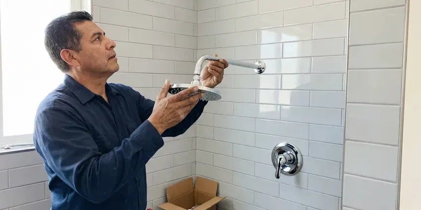
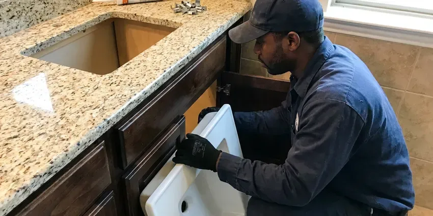

Toilet Repair in St. Johnsbury, VT
From worn flappers to cracked wax seals, our plumbers find the true cause and fix your toilet the same day in St. Johnsbury, VT.
- Fast Local Service
- Upfront Pricing
- Licensed Plumbers
- Licensed, Insured Plumbers
Get Your Toilet Working Right Again in St. Johnsbury, VT.
Contact us today for a quick response and professional solutions to all your toilet repair needs.
Expert Toilet Repair Services Across St. Johnsbury, VT
When your toilet acts up in St. Johnsbury, VT, CKV Plumbing is ready to help. We understand the inconvenience and potential water waste a malfunctioning toilet can cause, which is why we offer efficient repair services designed to restore full function quickly.
Our expertise includes:
- Wax ring and closet flange repairs for leaks at the base
- Descaling rim jets and siphon holes blocked by hard water
- Fill valve, flapper and flush valve rebuilds on all brands

Additional Bathroom Plumbing Services in St. Johnsbury, VT
From toilets to showers, our bathroom plumbing team in St. Johnsbury, VT repairs, installs, and replaces every fixture with clean, code-compliant work.




St. Johnsbury shower installation specialists

Customers
Why Choose CKV Plumbing for Toilet Repair in St. Johnsbury, VT?
We focus on effective solutions that prevent future problems, saving you time and money on repeated service calls. Our commitment to quality means your toilet repair is done right the first time.
- Clear Pricing, You approve a fixed price before we pick up a wrench.
- Accurate Diagnosis, Our plumbers use specialized tools to pinpoint the exact cause of your toilet's malfunction, from worn-out flappers to blocked trapways.
- Parts On Hand, We stock fill valves, flappers, flush valves, seals and supply lines for most common toilets.
Citywide Coverage
CKV Plumbing serves every neighborhood in St. Johnsbury for your toilet repair needs. Whether you're in the heart of downtown or the surrounding suburbs, our plumbers are local and ready to help.
Experienced Team
The CKV Plumbing team brings years of specialized experience to every toilet repair job. We understand the unique challenges of plumbing systems in St. Johnsbury homes and apply our expertise to deliver lasting solutions.
Safety-First Approach
Your safety and the integrity of your home's plumbing are our top priorities during any toilet repair. Our plumbers follow established protocols to ensure all work is up to code in St. Johnsbury, VT and completely safe.
Trusted Certified St. Johnsbury Plumbing Services Professionals
At CKV Plumbing, we take pride in providing licensed, certified plumbing services throughout St. Johnsbury, VT. Backed by recognized industry credentials, our experienced plumbers combine technical skill with genuine customer care. Whether it is repair, installation, or maintenance, we follow strict safety and quality standards to deliver long-lasting results you can trust.
Call Us Now PHCC Plumbing Contractor Recognition
PHCC Plumbing Contractor Recognition Better Business Bureau (BBB) Accreditation
Better Business Bureau (BBB) Accreditation Angi Certified Pro
Angi Certified Pro ISO 9001 Quality Management Certification
ISO 9001 Quality Management CertificationDependable Toilet Repair Services in St. Johnsbury, VT
Leaking Toilet Base Repair in St. Johnsbury, VT
Water around the base typically means the wax ring has failed or the toilet has been rocking on a loose flange. On slab foundations, the flange often sits on concrete and can crack when bolts are overtightened. We pull the toilet, inspect the flange, install a repair ring or new flange if needed and reset the bowl on a fresh seal. We also check for soft flooring so you know if any water damage needs attention.

Clogged Toilet Clearing in St. Johnsbury, VT
Stubborn toilet clogs are a frequent problem that can bring your bathroom to a halt. While some can be cleared with a plunger, deeper blockages may point to issues further down the drain line or even in the main sewer line. Our technicians use professional-grade augers and sometimes even camera inspections to locate and remove obstructions effectively. We handle everything from foreign objects to excessive toilet paper, making sure your toilet drains freely again.
Weak Flush and Clog Repair in St. Johnsbury, VT
If your toilet needs two flushes or clogs often, the problem may be scale in the rim jets, a partial blockage in the trapway or a flush valve that does not open fully. We auger the trap, check the vent if gurgling is present and clean the jets with a descaling treatment. Some low-flow toilets from the 1990s simply flush poorly, and we will tell you plainly if replacement is the better fix.
Brands We Service in St. Johnsbury, VT
CKV Plumbing is experienced in repairing toilets from all leading manufacturers commonly found in St. Johnsbury, VT homes and businesses. This includes well-known brands like Kohler, American Standard, Toto, Delta, Eljer, and Gerber. Our plumbers are familiar with the specific designs and proprietary parts of these brands, allowing for accurate diagnosis and fast repair. We stock a wide range of common replacement parts to ensure that most repairs can be completed on the first visit, regardless of your toilet's brand or model.
Clogged Toilet Solutions in St. Johnsbury, VT
Stubborn toilet clogs are a common nuisance in St. Johnsbury, VT homes, often caused by non-flushable items or excessive toilet paper. While a plunger can clear minor blockages, persistent clogs suggest a deeper issue in the trap, drain line, or even the main sewer line. Our plumbers use professional-grade augers and hydro-jetting equipment to safely and effectively clear even the toughest clogs without damaging your toilet or pipes. We also inspect for potential causes like root intrusion or pipe corrosion, which are sometimes seen in older homes.
Toilet Tank and Bowl Crack Repair in St. Johnsbury
Cracks in a toilet tank or bowl in St. Johnsbury can lead to significant water leakage and require immediate attention. While small hairline cracks might be temporarily sealed, larger or structural cracks often necessitate replacement of the affected component. Our technicians assess the severity of the crack and advise on the most cost-effective and durable solution. We can perform careful tank or bowl replacements, ensuring a watertight seal and proper function, preventing further water damage to your flooring or subfloor.
Leaking Toilet Repair in St. Johnsbury
Toilet leaks can cause significant water damage to your bathroom floor, subfloor, and even the ceiling below. Leaks can start from the base of the toilet, the tank, or the supply line. Common culprits include a worn-out wax ring, loose bolts, or cracked porcelain. We carefully inspect all potential leak points, replacing seals, tightening connections, or recommending bowl replacement if the porcelain is damaged, preventing further water intrusion.

Commercial Toilet Repair in St. Johnsbury
Commercial toilets often endure heavier use and require specialized parts and expertise for repair. CKV Plumbing offers complete toilet repair services for businesses and commercial properties throughout St. Johnsbury. We understand the importance of minimizing downtime for your restrooms and provide efficient, durable repairs for flushometer toilets, low-flow models, and standard commercial units, ensuring your business operations run smoothly.
Toilet Repair Near Me in St. Johnsbury, VT
Our commitment to the St. Johnsbury community means we're always close by, ready to address your toilet repair needs efficiently. We pride ourselves on being the go-to local experts for all plumbing issues, delivering quality service right to your doorstep.
When you search for 'toilet repair near me' in St. Johnsbury, VT, you want a trusted local expert who can respond fast. CKV Plumbing is located to serve the entire St. Johnsbury area, ensuring that our plumbers can reach your home or business promptly. We pride ourselves on providing efficient, neighborhood-focused service.
CKV Plumbing at a Glance
- Licensed and insured plumbers serving St. Johnsbury, VT
- Same-day appointments and 24/7 emergency response
- Upfront, flat-rate pricing before work begins
- 4.8-star rated by 553+ Vermont customers
St. Johnsbury Map
St. Johnsbury Information
- Population
- 5,994
- Area codes
- Local
- Service area
- St. Johnsbury and communities within 40 miles
- Nearby
- Barre, Montpelier, Essex Junction, South Burlington
Heating systems, boilers and water heaters work hard through the winter, so annual service helps prevent breakdowns in the coldest weeks. For homes in St. Johnsbury, VT, a toilet leak that goes unnoticed can increase indoor humidity, damage the subfloor and promote mold growth.
Expert Services
Trust our professionals for reliable CKV Plumbing solutions in St. Johnsbury, VT.
Our Specialized Plumbing Services in St. Johnsbury, VT
At CKV Plumbing, we provide a complete range of plumbing services across St. Johnsbury, VT. From leak detection to full system installations, our team ensures fast, precise, and affordable service for both residential and commercial properties. Explore our core services below:


How Our Toilet Repair Process Works in St. Johnsbury, VT
Getting a toilet fixed should be fast and simple. Here is what to expect from your first call to the final test flush.
Request a Quote
Call (802) 209-5139 and describe what your toilet is doing, such as running, leaking or clogging. We give you a time window and a price range before we arrive.
Diagnose and Price
Your plumber tests the tank, valves, seal and supply line to find the real cause. You get a flat price to approve before work begins.
Repair and Test
We install the new parts, adjust the water level and flush several times to confirm a clean, complete cycle. We dye-test the tank and check the base before we leave.
Frequently Asked Questions About Toilet Repair in St. Johnsbury
The cost of toilet repair in St. Johnsbury, VT can vary widely depending on the issue. Minor repairs like replacing a flapper might range from $100 to $250, while more complex issues such as a new fill valve or wax ring replacement could be $200 to $400. Severe clogs requiring professional augering might fall in the $150 to $350 range. We provide a clear estimate after diagnosing the problem.
We repair Kohler, American Standard, TOTO, Gerber, Mansfield, Glacier Bay, Delta and nearly all other residential brands. We also service commercial flushometers from Sloan and Zurn.
Watch for phantom refills, hissing from the tank, a toilet that rocks, stains or soft flooring at the base and repeated clogs. Catching these early keeps a small repair from turning into a floor replacement.
Our skilled plumbers are equipped to repair all major toilet brands commonly found in St. Johnsbury, VT homes and businesses. This includes popular manufacturers like Kohler, American Standard, Toto, Delta, Eljer, Gerber, and more. We stock common parts for fast service.
Hard water leaves calcium and magnesium deposits on flush valve seats, fill valve ports and rim jets. Over time this causes leaks, slow refills and weak flushes. Descaling and choosing parts made to resist scale help repairs last longer.
Weak flushing can be caused by several issues, including insufficient water in the tank, a clogged rim jet, a partially closed stop valve, or a partial clog in the drain line. Our plumbers can diagnose the precise cause and restore full flushing power.
If your toilet is overflowing, immediately reach behind the toilet and turn the small valve on the water supply line clockwise to shut off the water. This will stop the water from continuously filling the bowl. Then, try to clear any visible blockage with a plunger and call a professional plumber like CKV Plumbing for assistance.
We service all major toilet brands, including but not limited to American Standard, Kohler, Toto, Delta, Gerber, and Mansfield. Our plumbers are equipped with a wide range of common replacement parts and have experience with many models and flush systems.
What People Are Saying About Our Plumbing Experts?

Emily R.
I called CKV Plumbing for plumbing repair, and the technician was fast, polite, and thorough. They explained the problem clearly and fixed it the same day. I will definitely hire them again. Highly recommended!
Plumbing Repair · Essex Junction, VT
James P.
Our commercial plumbing system had a leak under the sink, and CKV Plumbing handled it professionally. The plumbers arrived quickly and restored everything without disruption to our customers.
Commercial Plumbing · Montpelier, VT
Laura S.
I scheduled a water heater replacement, and the team made the process smooth and affordable. The new unit works perfectly, and they cleaned up after completing the job.
Water Heater Replacement · South Burlington, VT
Mark T.
When our office needed drain cleaning, CKV Plumbing provided quick, reliable service. The plumber arrived on time and made sure every drain flowed perfectly before leaving. Very satisfied.
Drain Cleaning · St. Johnsbury, VTRobert G.
The trenchless sewer replacement saved our front yard. They walked us through the camera inspection footage first so we knew exactly what we were paying for.
Sewer Line Replacement · South Burlington, VT
Patricia H.
We had a slab leak that two other companies could not find. CKV Plumbing located it in under an hour, explained our options, and the price matched the quote to the dollar.
Slab Leak Repair · South Burlington, VT